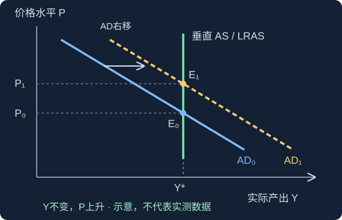
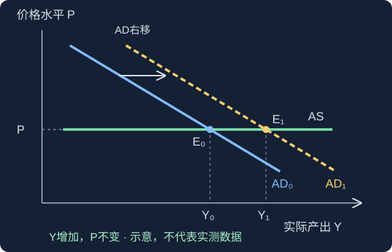
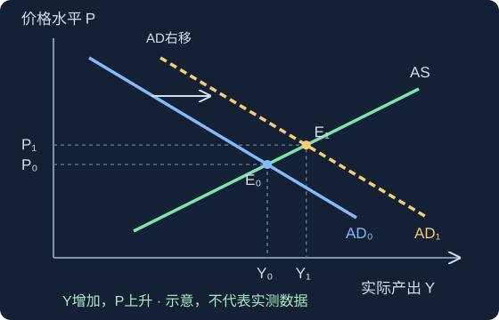
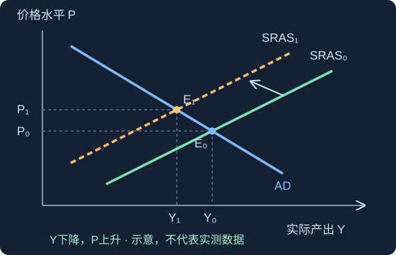

农行笔试专项：中国农业银行企业文化与行史行情 2026年核对版 →，包括三大定位、三大战略的新旧对照和自编练习。
第一部分 核心原理与知识框架
把金融体系想成一张“资金路网”：货币是路上流动的东西，信用让资金先借后还，利率给资金使用权标价，市场提供交易场所，金融机构负责连接、经营与调节。
复习边界：本页覆盖所给视频已展开的金融基础，不等于银行招聘全部考试范围。视频结尾仅出现第五章标题，未展开内容；行测、英语、经济、会计、计算机等应按目标银行要求另行复习。示例利率均为教学假设。
第一章 货币与货币制度
考点 01
货币的本质与五大职能
大白话：钱既能给商品标价，也能买东西、存起来、还债、跨国支付。判断职能，要看它当时在做什么。
经典教材把货币概括为固定充当一般等价物的特殊商品；现代信用货币不以兑换足额贵金属为前提。价值形式可按“简单或偶然 → 扩大 → 一般 → 货币”理解。货币的两项基本职能是价值尺度、流通手段。
| 职能 | 怎么认 | 例子 |
|---|
| 价值尺度 | 标价，观念中的货币即可 | 衣服标签写299元 |
| 流通手段 | 买卖同步，钱货当场交换 | 付钱拿走面包 |
| 贮藏手段 | 退出当前流通并保存价值 | 把现金留作备用金 |
| 支付手段 | 清偿债务或单方面支付 | 到期还款、发工资、缴税 |
| 世界货币 | 在国际经济关系中发挥作用 | 用于跨国结算 |
举个例子：你今天买手机并当场付款，通常判为流通手段；先赊账拿手机，下个月清偿货款，后一次付款判为支付手段。
易错提醒：不要把“所有付款”都判为支付手段。经典金属货币理论中，贮藏职能还强调足值金属货币；现金存入银行会变成存款债权，不能只凭“存钱”二字判断。
考点 02
我国货币层次 M0 M1 M2
大白话：像三层套盒：现金是最里面一层，随时可用的钱再包一层，更广的钱再包一层。
划分标准是流动性，也就是方便、低成本地转换为支付能力的程度。M0为流通中现金；M1、M2依次扩大，不能把它们相加求“总货币”。个人活期存款已进入2025年起的新M1口径。人民银行口径说明
M2 广义货币 · 包含M1，以及单位和个人定期存款、其他存款等
M1 狭义货币 · M0＋单位活期存款＋个人活期存款＋非银行支付机构客户备付金
M0 流通中现金 · 银行体系外流通的现钞
举个例子：钱包里100元现金属于M0，也包含在M1和M2中；工资卡中的活期余额属于M1、M2，不属于M0；个人定期存款属于M2，不属于M1。
易错提醒：信用卡授信额度不是已经持有的货币。M2增速高于M1增速只能作为资金活化程度的观察线索，不能单凭剪刀差断言经济好坏。社融衡量实体经济获得的融资，与货币层次不是同一指标。
考点 03
货币制度的要素与演变
大白话：一套制度要回答：用什么当钱、多少钱算一单位、谁能发行、能不能拿它要求偿债。
五个常见构成要素：货币材料、货币单位、主币和辅币、法定支付能力、铸造发行与流通程序。人民币主辅币与经典金属本位模型要区分，不能机械套用“辅币必然有限法偿”。
| 制度 | 抓住的区别 |
|---|
| 银本位制 | 白银为本位货币材料 |
| 金银复本位制 | 金银同为本位；双本位的法定比价偏离市场比价时，可能出现劣币驱逐良币 |
| 金本位制 | 金币本位强调自由铸造、自由兑换、自由输出入；金块本位按条件兑金块，金汇兑本位通过外汇间接联系黄金 |
| 不兑现信用货币制度 | 没有承诺按固定数量兑换黄金；靠信用与制度运行 |
举个例子：两种硬币法定都能偿还10元，但其中一枚金属实际更值钱。人们倾向把更值钱的留起来，用相对不值钱的付款，这就是“劣币驱逐良币”的直观情景。
易错提醒：这个规律有法定比价等前提；不是“任何市场里差东西都会打败好东西”。人民币由中国人民银行发行，不规定含金量，不与黄金直接兑换。
考点 04
基础货币 存款创造与货币乘数
大白话：央行提供“底座”，商业银行体系在准备金、资本、需求等约束下扩展存款。
基础货币的常用教材表达为B＝流通中现金C＋银行准备金R。简化存款扩张模型中，原始存款为D₀、法定准备金率为r，存款总额上限为；新增派生存款为。
再贷款、再贴现、公开市场买入等可影响基础货币。降准主要释放银行可动用准备金、改变约束；不能不加条件就说基础货币总量必然增加。
初始存款1000留100，贷900
→下一轮存款900留90，贷810
→再下一轮810留81，贷729
→逐轮扩张总和上限10000
举个例子：外部现金1000元进入体系，准备金率10%，假设贷款全部重新存回、无现金漏损、无超额准备金且银行愿意贷：存款总额可到10000元，其中新派生9000元。
易错提醒：1/r是理想模型，不能当成现实固定倍数。一般公式里c增加使乘数下降还依赖rd＋re＜1；现实还受信贷需求、风险和资本约束。
第二章 信用 利息与利率
考点 05
信用的本质与基本形式
大白话：信用不是简单说“这人靠谱”，而是现在先给价值，以后按约定偿还。
信用以偿还为条件，体现债权债务关系。常见特征为偿还性、收益性和风险性；具体交易也可能免息。判断信用形式要先找“谁借给谁、用于什么”。
| 形式 | 关系 | 例子与边界 |
|---|
| 商业信用 | 企业之间依托商品交易提供信用 | 供应商允许商店60天后付款；受交易方向、规模和期限限制 |
| 银行信用 | 银行等金融机构以货币形式提供信用 | 银行向企业放贷款；是现代重要信用形式 |
| 国家信用 | 国家作为债权人或债务人 | 发行国债融资，购买国债者是债权人 |
| 消费信用 | 向消费者提供用于消费的信用 | 分期购买家电、消费贷款；分类标准与前几类可能交叉 |
举个例子：家电企业允许消费者分期付款，按用途可称消费信用；银行提供家装贷款，也同时具有银行信用和消费信用的特征。
易错提醒：不同分类标准可能重叠，不能看到“银行”就排除消费信用。民间信用、国际信用是另外的分类视角；租赁信用与融资租赁也可能涉及融资安排。
考点 06
利息与利率怎么分类
大白话：利息是使用资金付的钱；利率是把这笔钱除以本金，并说清楚用了多久。
| 标准 | 分类 | 辨别点 |
|---|
| 计息方式 | 单利 / 复利 | 只按本金算，还是利息也参与下一期计息 |
| 购买力 | 名义 / 实际 | 有没有扣除通货膨胀影响 |
| 合同变化 | 固定 / 浮动 | 合同期内利率是否按约定调整 |
| 形成方式 | 官定 / 行业 / 市场 | 谁确定，是否由市场供求形成 |
| 期限或地位 | 短期 / 长期；基准 / 一般 | 长期利率不保证一定高；基准有定价参考作用 |
| 交易对象 | 存款 / 贷款 / 拆借 / 债券 | 要看交易关系 |
举个例子：存款名义年利率3%，物价上涨2%，实际利率精确值约为1.03/1.02－1＝0.98%，近似算法是3%－2%＝1%。
易错提醒：“实际利率”在不同题里可能指扣除通胀后的利率，也可能指一年多次计息得到的有效年利率，要先读题。
考点 07
单利 复利 现值 终值与年金
大白话：往未来搬钱要乘增长因子；把未来的钱搬回今天，要除增长因子。
P为现值或本金，F为终值，I为利息，r为每期利率，n为期数；利率与期数的单位必须一致。单利I＝Prn，F＝P(1＋rn)；复利，。
普通年金是每期期末等额收付；先付年金发生在每期期初。永续年金无到期日。常用年金、增长年金、有效年利率公式见公式速查。
今天 P＝10000起点
→一年后10500本金加第一年利息
→两年后11025第一年利息也生利息
举个例子：1万元按年利率5%放2年：单利终值11000元，复利终值11025元。反过来，2年后11025元按5%复利折现，今天值10000元。
易错提醒：“复利一定多”要比较同一正利率、同一本金和超过一期的期限。72法则是近似翻倍年数＝72÷年利率百分数，例如6%约12年，不是精确公式。
考点 08
利率决定理论 影响因素与期限结构
大白话：不同理论像不同镜头：有的看利润，有的看储蓄投资，有的看人们愿意拿多少现金。
| 理论 | 核心关系 | 记忆抓手 |
|---|
| 马克思利率理论 | 利息是利润的一部分，利率受平均利润率和借贷资本供求影响 | 利润怎么分 |
| 古典实际利率理论 | 储蓄供给与投资需求决定均衡利率 | 储蓄和投资 |
| 凯恩斯流动性偏好理论 | 货币供给与货币需求决定利率；持币动机有交易、预防、投机 | 为什么想拿着钱 |
| 可贷资金理论 | 综合可贷资金供给与需求 | 可贷的钱够不够 |
其他条件不变时，资金需求增多通常推高利率；预期通胀、信用风险溢价也会影响名义利率。流动性陷阱是利率很低时持币需求高度敏感、传统货币扩张刺激作用可能减弱的理论情景。
期限结构三种思路：预期理论看未来短期利率；市场分割理论看不同期限各自的供求；流动性溢价理论在预期之外加入期限溢价。
举个例子：一家公司资信变差，即使政策利率没变，银行也可能提高对它的贷款加点，因为违约风险补偿上升。
易错提醒：收益率曲线可上斜、平坦或倒挂；不要把“期限越长利率必然越高”当成定律。
考点 09
利率市场化与 LPR 形成机制
大白话：LPR是贷款定价的参考尺，客户最终利率还要看合同加点、信用和成本。
LPR为贷款市场报价利率，有1年期和5年期以上两个品种。报价行按公开市场操作利率加点报价，经剔除最高、最低报价后算术平均，并按规定步长取整。利率市场化让资金供求和风险更充分地参与定价。
口径核对：中国货币网当前说明为20家报价行，每月20日遇节假日顺延，当日9时公布，报价步长0.05个百分点。视频的“18家、9时30分”不沿用。中国货币网 LPR说明
政策利率信号例如7天期逆回购操作利率
→市场利率与报价资金成本、风险等共同影响
→LPR参考报价行报价后计算
→客户贷款利率LPR＋约定加点
举个例子：假设某贷款约定“LPR＋50个基点”，基准为3%，则执行3.5%。50bp＝0.50个百分点；不等于50%，也不是3%乘以1.5。
易错提醒：LPR变化不等于全部存量贷款当日同步变化，重定价日期和方式按合同。政策利率、LPR、客户贷款利率是传导链上的不同概念。
第三章 金融市场
考点 10
市场功能 分类与金融工具四属性
大白话：先问钱借多久，再问是新发行还是旧转手，最后看交易的是哪种权利。
金融市场具有资金融通、资源配置、风险分散、价格发现和宏观政策传导等作用。金融工具常比较期限性、流动性、风险性、收益性；高预期收益通常对应更高风险，不代表高风险必有高实际收益。
| 维度 | 分类 | 辨别方法 |
|---|
| 期限 | 货币市场 / 资本市场 | 通常以1年为界；货币市场1年及以内，资本市场中长期及股票等 |
| 交易性质 | 一级 / 二级市场 | 发行融资 / 已发行证券转让 |
| 交割方式 | 现货 / 远期 / 期货 / 期权等 | 看当下交割还是未来义务或权利 |
| 组织方式 | 场内 / 场外 | 看交易组织与规则，不单看有没有实体大厅 |
| 交易对象 | 票据、证券、外汇、黄金、保险、衍生品等 | 分类视角不同，不是互斥的一棵树 |
举个例子：企业IPO发行新股拿到融资，是一级市场；你在交易所买别人持有的股票，是二级市场，钱通常付给卖方。
易错提醒：二级市场虽通常不直接给发行人新增融资，却提供流动性和价格参考。股票没有固定到期日，不能因此放到短期货币市场。
考点 11
同业拆借与回购 正回购与逆回购
大白话：拆借像机构之间短期借钱；回购像以证券为基础约定“现在交易、到期反向交易”的融资。
同业拆借主要用于金融机构短期头寸调剂，典型形式为无担保融资。Shibor是上海银行间同业拆放利率。回购常见质押式和买断式：前者以证券质押，后者在初次交易时转移所有权，并约定未来反向交易。
| 观察对象 | 第一步 | 到期 | 现金方向 |
|---|
| 正回购方 | 以证券融资 | 按约定付钱赎回或完成反向交易 | 先拿钱 |
| 逆回购方 | 支付资金 | 收回本金与回购收益 | 先出钱 |
逆回购方 B支付100万元
→正回购方 A融入资金并提供证券安排
→到期反向A还钱，B收本息
举个例子：A银行拿债券向B银行融入100万元，A是正回购方，B是逆回购方。央行开展逆回购，是央行把钱给市场；到期且不续作时形成回笼。
易错提醒：“逆回购放水”以央行为观察视角。换成普通交易者，说逆回购意味着自己先支付资金。抵押或质押可以降低风险，不能保证回购利率在所有条件下一定低于拆借利率。
考点 12
票据 国库券与大额可转让定期存单
大白话：先分清谁签发、谁付款，再看票据有没有提前换钱。
| 票据 | 核心关系 | 例子 |
|---|
| 汇票 | 出票人委托付款人，向收款人付款，基本关系三方 | 企业签发汇票，约定由付款人付款 |
| 本票 | 出票人承诺自己付款，基本关系两方 | 在我国票据法语境中，本票指银行本票 |
| 支票 | 出票人委托办理支票存款业务的银行等机构见票付款 | 企业开支票，由开户行付款 |
承兑是付款人承诺承担到期付款责任，主要见于商业汇票；贴现是持票人到期前向银行融资；转贴现是银行之间转让贴现票据；再贴现是银行向央行办理贴现。
国库券是政府发行的短期债务工具，常见贴现发行；大额可转让定期存单（CD）强调大额、定期、可转让。不要把市场上的各类存单产品条款混在一起。
举个例子：一张10万元票据，距离到期90天，年贴现率4%，按360天计：贴现息1000元，实际拿到99000元。
易错提醒：银行承兑汇票不等于完全无风险。贴现题按题设选择360或365天，不自行换口径。CD与面向机构发行的同业存单、个人大额存单应按对象和条款区分。
考点 13
股票市场 股东权利与估值
大白话：买股票是成为公司的股东，不是把钱借给公司并约定到期还本。
普通股一般有表决、收益分配和剩余财产分配等权利；优先股在约定分红、剩余财产分配顺序等方面优先，表决权通常受限，并非永远绝对无表决权。股票可转让，但通常不能要求公司随时退还出资。
A股是人民币普通股票；B股是人民币特种股票，以外币认购和交易；H股在香港上市，N股、S股分别是特定境外上市地点的常见称呼。境内多层次市场包括主板、科创板、创业板、北交所、新三板及区域性股权市场等，层次与服务对象不同。
">">
举个例子：假设未来每年稳定分红4元，要求收益率8%，零增长模型估值为50元。若要求收益率升至10%，在其他条件不变时估值变为40元。
易错提醒：“股价＝预期股息/市场利率”只是简化模型，不是通用报价公式。现行公司法允许面额股或无面额股，视频“必须有面额”已过时。公司法第142条
考点 14
债券价格 收益率与风险
大白话：债券像一组未来现金流：市场要求的回报越高，同一组现金流今天越不值钱。
债券基本要素包括面值、期限、票面利率、发行人等。可按政府/金融/公司发行、固定/浮动利率、有无担保等分类。可转换债券可按约定转成股票；可赎回债券把提前赎回权给发行人，可回售债券把回售权给投资者。
对于现金流固定的普通债券，市场收益率上升，价格下降。票面利率高于市场收益率时通常溢价，低于时通常折价。久期衡量价格对收益率变化的敏感度；在常见条件下久期越大越敏感。凸性用于修正线性近似。
举个例子：面值1000元，1年后付50元票息并还本；市场收益率10%，今天价格为1050/1.10≈954.55元，折价。若以此价格买入，当期收益率约5.24%，到期收益率为10%。
易错提醒：当期收益率没有计入折溢价带来的本金损益，不等于到期收益率。零息债在按年复利计量的麦考利久期口径下，久期等于剩余期限。国债仍有利率与通胀等风险。
考点 15
证券投资基金 三方角色与产品类型
大白话：大家把钱集中起来，由专业管理人投资，托管人管资产保管等工作；收益和风险按份额承担。
| 分类 | 关键区别 |
|---|
| 封闭式 / 开放式 | 封闭式在封闭期内通常不能直接申赎，可按规则转让；开放式按规则申赎 |
| 股票 / 债券 / 货币 / 混合 | 按投资对象和比例分类；股票与债券基金常见监管分类阈值均为相应资产80%，具体按适用规则及合同 |
| 主动 / 指数 | 主动管理选择策略；指数基金追踪特定指数，不保证绝无跟踪误差 |
| ETF / LOF / QDII / FOF / REITs | ETF：交易型开放式；LOF：上市开放式；QDII：境外投资资格及相应产品；FOF：基金中基金；REITs：不动产投资信托相关产品 |
份额持有人出资，享受收益并承担风险
→基金管理人依据合同管理和投资
→基金托管人资产保管，履行监督等职责
举个例子：基金资产总值1200万元、负债200万元、份额500万份，份额净值＝2元。持有1000份对应净资产价值2000元，卖出实得还受交易价格和费用等影响。
易错提醒：托管不等于保本，货币基金不等于银行存款。不能只按“股票、混合、债券、货币”给所有具体产品排固定风险顺序。
考点 16
金融衍生工具 远期 期货与套期保值
大白话：今天先约定未来的买卖规则，用来管理价格变化，也可能被用于投机。
| 比较 | 远期 | 期货 |
|---|
| 合约 | 通常场外协商，非标准化 | 通常交易所标准化 |
| 结算与风险 | 常按约定到期履约，承担对手信用风险 | 集中清算、保证金、每日无负债结算等机制 |
| 流动性 | 通常较弱 | 通常更便于对冲平仓，但依品种而异 |
衍生工具价值依赖利率、汇率、证券或商品等基础变量。期货制度常包括保证金、逐日盯市、涨跌停板、持仓限额和强行平仓。套保方向：未来要买且怕涨价，买入期货；未来要卖且怕跌价，卖出期货。
举个例子：面包厂三个月后需要买小麦，担心涨价，可建立小麦期货多头。小麦真涨时现货采购变贵，但期货盈利可部分抵消。
易错提醒：套保通常存在基差风险，不保证完全无损。保证金比例按品种和规则变化，不能固定背成5%至15%；期货亏损可能超过最初保证金。
考点 17
期权与互换 买方权利和卖方义务
大白话：期权像花钱买一张“可以选择”的票；互换像双方按合同交换不同类型的现金流。
看涨期权给买方按执行价买入的权利；看跌期权给买方按执行价卖出的权利。买方支付权利金，可以放弃；卖方收到权利金，须履行被行权时的义务。欧式到期行权，美式在规定有效期内可行权。
利率互换常见同币种固定利率与浮动利率交换，名义本金通常不交换。货币互换涉及不同币种现金流，本金可按约定交换；CDS涉及信用事件触发的保护支付。互换可利用比较优势，但仍有对手风险。
举个例子：买入执行价100元的看涨期权，权利金5元。到期价格120元，净赚15元；到期90元，放弃行权，亏5元。到期105元才是盈亏平衡。
易错提醒：看涨买方潜在收益理论上无上限；看跌买方收益有上限（标的价格不低于0）。无保护的看涨卖方才有理论无限损失风险，不能把所有期权卖方都概括成无限亏损。
第四章 金融机构体系
考点 18
中央银行的性质 职能与业务
大白话：央行像金融体系的“总水闸和清算中枢”，不是面向普通居民经营日常存贷款的商业银行。
| 传统职能 | 含义 | 典型业务 |
|---|
| 发行的银行 | 管理货币发行与流通 | 货币发行体现为央行负债 |
| 银行的银行 | 服务金融机构并维护金融稳定 | 准备金、再贷款、再贴现、清算、最后贷款人 |
| 政府的银行 | 承担相关公共金融职能 | 经理国库等 |
人民银行的货币政策目标为保持货币币值的稳定，并以此促进经济增长。央行资产可包括对银行债权、证券、外汇等；负债可包括发行货币、银行准备金存款等。商业银行在央行的准备金，是商业银行资产、央行负债。
制度类型常见单一式、复合式、跨国中央银行和准中央银行等教材分类；不要把组织体系里的“二元”直接等同于兼营商业银行业务的“复合式”。
中央银行发行、政策、清算与稳定
→商业银行等机构面向客户经营金融业务
→企业与居民存款、融资、支付、投资
举个例子：商业银行流动性不足时，央行可能通过符合条件的流动性工具支持银行；这与居民去商业银行申请住房贷款，交易关系不同。
易错提醒：“政府的银行”不等于可以任意给财政透支或直接认购政府债券。中央银行履行宏观金融管理职责，也不能由此推断所有银行业微观监管职能都由央行独占。
考点 19
商业银行的负债与资金来源
大白话：站在银行角度：别人存进来的钱，银行以后要还，所以是负债。
商业银行资金来源包括存款、同业融入、向央行借款、发行金融债等负债渠道，以及股东投入、留存收益等自有资本。自有资本属于所有者权益，不是负债；把它列在“资金来源”中，不等于改了会计性质。
| 来源 | 怎么理解 |
|---|
| 活期存款 | 客户可按约定随时支取，流动性高 |
| 定期与储蓄类存款 | 有期限或产品约定，稳定性、成本与提前支取规则各异 |
| 借入资金 | 同业拆入、回购融资、央行借款等 |
| 债券融资 | 银行按规则发行债券，承担偿付责任 |
| 权益资本 | 股本、资本公积、留存收益等，吸收损失的重要缓冲 |
举个例子：你在银行存10万元：对你是金融资产；对银行是10万元存款负债。股东投入银行10万元，则是股东权益性质的资金来源。
易错提醒：“钱进来了就是收入”是错的。吸收存款主要增加资产与负债，不等于银行赚了这笔钱；利息支出等才影响利润。
考点 20
商业银行资产 贷款五级分类与风险指标
大白话：银行把钱放在哪儿就是资金运用；借给客户的钱是银行将来有权收回的资产。
资产包括库存现金、在央行和同业的存款等现金资产、贷款、证券投资等。贷款可按期限、用途和担保条件分类；信用贷款、保证贷款、抵押贷款、质押贷款的担保安排不同。中间业务常提供结算、代理、托管等服务获取费用，属于本页补充概念。
| 五级分类 | 理解抓手 |
|---|
| 正常 | 可正常履约 |
| 关注 | 目前能还，但存在不利因素 |
| 次级 | 偿债能力出现明显问题 |
| 可疑 | 不能足额偿付，预计有较大损失 |
| 损失 | 采取措施后仍仅能收回极少或无法收回 |
次级、可疑、损失后三类合称不良；真实分类还须按监管规则综合判断，不能只凭一个生活场景定级。金融资产风险分类办法
风险管理兼顾安全性、流动性、效益性；贷款“三查”为贷前调查、贷时审查、贷后检查。监管阈值有适用范围和动态调整，不把视频中的150%、2.5%当作所有银行永恒统一的要求。
举个例子：贷款总额100亿元，不良贷款2亿元，贷款损失准备3亿元：不良率2%，拨备覆盖率150%，贷款拨备率3%。
易错提醒：分子分母不能交换。证券可变现不意味着绝不亏损；现金通常流动性高但收益较低，贷款一般不如现金方便立即变现。
第二部分 场景化讲解
做题时先选观察主体，再标现金流方向，最后代入公式。下面把容易混淆的关系放进完整场景。
场景一 一笔存款为什么能对应多轮贷款
问题：1000元存款，怎么会在理想模型里形成10000元存款总额？关键是“贷出的钱又被收款人存回银行体系”，每一轮都形成新的存款债务，而不是央行印了9000元纸币。
理想存款扩张回放
按“下一步”观察资金和债权如何变化，也可以播放或拖动进度。
这是传统教学模型。现代银行发放贷款也会直接创造存款；现实决策同时受到资本、流动性、风险管理和需求约束。
场景二 贷款100万 为什么利率下降后月供没立刻变
假设合同采用某期限LPR＋40bp，重定价日为每年1月1日。LPR从假设的3.2%降到3.0%，下一重定价时合同利率才可能从3.6%变到3.4%。先查合同，不把发布日当成所有贷款的重定价日。
若题目只问一年利息差，且明确按100万元整年不变本金计算：100万×0.2%＝2000元。若是按月还本的房贷，不能直接拿这2000元除12当月供差。
场景三 同一张债券 市场利率涨了会怎样
假设每年付息一次，到期还本，无违约、不含税费，且所有现金流用同一收益率折现。修改市场收益率，观察固定票息的债券怎样重新定价。
每次只改一个条件最容易看出因果。收益率为0时直接相加现金流；这不是实时市场报价。
场景四 央行逆回购 钱到底去了哪里
先固定央行视角：逆回购首期向市场提供资金，到期收回本息。当天总流动性变化还要综合到期量和其他因素。
逆回购首期与到期回放
按“下一步”观察资金和债权如何变化，也可以播放或拖动进度。
场景五 企业怕原料涨价 投资者买看涨期权
面包厂的目标是控制未来采购成本，适合用相应多头套保分析。期权买方的目标是花权利金换选择权；无论期货还是期权，都先把“到期收益”和“扣成本后的净收益”分清。
未来要买小麦担心涨价
→建立期货多头上涨时可能盈利
→现货采购＋期货结果以对冲成本波动为目标
看涨期权执行价100、权利金5：到期价格103时行权收益3，但净收益＝3－5＝－2，仍亏钱；“实值”不等于“已盈利”。
场景六 从银行视角看资产负债表
| 事件 | 银行资产 | 银行负债或权益 |
|---|
| 客户存现金10万元 | 现金＋10万元 | 存款负债＋10万元 |
| 银行发放贷款并记入客户账户20万元 | 贷款＋20万元 | 客户存款负债＋20万元 |
| 股东投入现金5万元 | 现金＋5万元 | 所有者权益＋5万元 |
资金来源不只有负债；资产也不等于利润。资本的作用是吸收损失，不能把资本充足率简单算成“资本/总资产”，其监管分母涉及风险加权资产。
模拟面试追问 为什么吸收存款不是银行收入
因为银行同时承担向客户偿还本金的义务，资产增加对应负债增加。只有确认利息收入、手续费等经营收入，再扣除资金成本、费用和信用减值等，才谈得上利润。
先统一时间单位。以下r是每期有效利率，n是期数；涉及年利率与每年m次计息时单独注明。A为每期等额现金流，D₁为下一期股利，g为每期增长率。
| 用途 | 公式 | 条件或提醒 |
|---|
| 单利利息与终值 | | |
| 复利终值与现值 | | 利息计入下一期本金 |
| 一年多次计息 | | j为名义年利率，n在此为年数 |
| 普通年金终值 | | 每期期末收付；r＝0时为An |
| 普通年金现值 | | 每期期末收付；r＝0时为An |
| 先付年金 | | 每期期初收付，其他条件相同 |
| 永续年金 | | 第一笔在一期后，r＞0，无有限终值 |
| 固定增长永续现金流 | | 第一笔A₁在一期后，r＞g |
| 通胀调整 | | i为名义利率，r为实际利率，π为通胀率；低利率时r≈i－π，预期与实际口径须一致 |
| 债券折现 | | C为每期票息，y为每期收益率，t从1到n |
| 股票简化估值 | | 适用于相应股利假设；r为要求收益率 |
| 股票指标 | | EPS为每股收益；负值时部分指标解释受限 |
| 基金净值 | | 净资产＝资产总值－负债 |
| 不良与拨备 | | 同口径下：拨备率＝覆盖率×不良率；百分数先化成小数 |
| 贴现 | | 年计息天数依题设 |
第三部分 模拟面试与笔试
20道题为本站自编练习，按上面的20个考点顺序排列。选完点“检查答案”，先核对思路再重做；关闭脚本仍可直接展开解析。
01 商品标价300元 但尚未成交 体现什么职能
- 流通手段
- 价值尺度
- 支付手段
- 世界货币
答案与解析
正确答案：B。标价只需观念中的货币，是价值尺度。尚未发生钱货交换。
02 按2025年起M1口径 个人活期存款属于哪一层
- 只在M0
- 属于M1且包含在M2中
- 只在M2 不在M1
- 不属于货币统计
答案与解析
正确答案：B。新M1纳入个人活期存款；M1包含于M2。现金M0才是最内层。
03 双本位制下出现劣币驱逐良币 关键条件是什么
- 任意两种商品竞争
- 金银法定比价与市场比价偏离
- 现金全部退出流通
- 所有货币均不可兑换
答案与解析
正确答案：B。两种货币按法定比价使用，而比价偏离市场价值时，人们倾向保留被低估的良币。
04 原始存款1000 准备金率20% 无漏损无超额准备 理想新增派生存款是多少
- 1000
- 4000
- 5000
- 6000
答案与解析
正确答案：B。存款总额1000/20%＝5000；新增派生存款5000－1000＝4000。
05 供应商允许零售店60天后支付货款 主要体现哪种信用
- 商业信用
- 国家信用
- 银行信用
- 央行信用
答案与解析
正确答案：A。企业基于商品买卖提供延期付款，是商业信用，不需要银行作为资金提供方。
06 名义利率5% 通胀2% 精确实际利率约为
- 3.00%
- 7.00%
- 2.94%
- 5.10%
答案与解析
正确答案：C。1.05/1.02－1≈2.9412%。3%只是近似值。
07 本金10000 年利率10% 按年复利2年 终值是多少
- 11000
- 12000
- 12100
- 10020
答案与解析
正确答案：C。10000×1.1²＝12100；12000是同条件单利终值。
08 交易 预防 投机三种持币动机 对应哪个理论
- 古典实际利率理论
- 流动性偏好理论
- 比较优势理论
- 市场分割理论
答案与解析
正确答案：B。凯恩斯流动性偏好理论从货币需求与供给解释利率，三种持币动机是其重要内容。
09 假设LPR为3% 合同加点50bp 执行利率为
- 3.05%
- 3.50%
- 4.50%
- 53%
答案与解析
正确答案：B。1bp＝0.01个百分点，50bp＝0.50个百分点，3%＋0.5%＝3.5%。
10 你在交易所买入另一投资者已持有的股票 属于
- 一级市场融资
- 央行再贷款
- 二级市场交易
- 商业信用
答案与解析
正确答案：C。已发行证券的投资者间转让是二级市场；交易款通常付给卖方。
11 央行逆回购投放100亿元 当日另有80亿元到期 仅比较本金净投放为
- 180亿元
- 100亿元
- 80亿元
- 20亿元
答案与解析
正确答案：D。净投放＝新投放100－到期回笼80＝20亿元，忽略其他操作和利息。
12 10万元票据 90天 年贴现率4% 按360天 银行实付多少
- 100000
- 99000
- 96000
- 101000
答案与解析
正确答案：B。贴现息100000×4%×90/360＝1000，实付99000元。
13 每年股利4元 永续不变 要求收益率8% 简化估值为
- 32元
- 50元
- 80元
- 100元
答案与解析
正确答案：B。零增长股利模型P＝D/r＝4/0.08＝50元。
14 面值1000元 一年后还本并付50元票息 市场收益率10% 价格约为
- 1000元
- 1050元
- 954.55元
- 909.09元
答案与解析
正确答案：C。未来总现金流1050元，价格1050/1.10＝954.55元；909.09元漏算了票息。
15 基金资产1200万元 负债200万元 份额500万份 单位净值为
- 2元
- 2.4元
- 0.4元
- 5元
答案与解析
正确答案：A。净资产1200－200＝1000万元，除500万份＝2元/份。
16 企业三个月后要购买铜 担心涨价 通常采用什么套保方向
- 卖出相应期货
- 买入相应期货
- 不看敞口随意选择
- 同时买卖同一合约即可消除所有风险
答案与解析
正确答案：B。未来要买、怕涨，建立多头套保；上涨时期货收益用于对冲现货采购成本上升，但仍有基差风险。
17 看涨期权执行价100 权利金5 到期标的价103 买方净收益为
- 3元
- 8元
- －2元
- －5元
答案与解析
正确答案：C。行权收益max(103－100,0)＝3，扣权利金5，净收益－2；实值不等于净盈利。
18 商业银行存在央行的准备金 从双方看分别是什么
- 商业银行负债 央行资产
- 双方都是资产
- 商业银行资产 央行负债
- 双方都是权益
答案与解析
正确答案：C。商业银行有权支配或按规则动用准备金，所以是其资产；央行对应承担存款负债。
19 客户把10万元现金存入银行 银行应如何理解
- 直接赚取10万元收入
- 现金资产和存款负债各增加10万元
- 所有者权益增加10万元
- 资产减少10万元
答案与解析
正确答案：B。银行现金增加，也负有对客户偿还存款的义务；不构成等额营业收入。
20 贷款100亿 不良2亿 贷款损失准备3亿 拨备覆盖率是多少
- 2%
- 3%
- 66.67%
- 150%
答案与解析
正确答案：D。覆盖率＝贷款损失准备/不良贷款＝3/2＝150%；不良率2%，贷款拨备率3%。
口头表达与追问
如何用一分钟讲清央行和商业银行
先说定位：央行负责货币政策、货币发行与金融体系相关公共职能，商业银行面向客户经营金融业务。再说关系：商业银行在央行存准备金、参与清算，并可按条件使用央行工具。最后举例：居民住房贷款属于商业银行业务，央行逆回购属于货币政策操作。
追问：准备金是谁的资产？答：商业银行资产、央行负债。说明同一笔钱要从不同主体看。
如何解释利率上升 债券价格下降
先固定“债券未来现金流不变”这个条件。市场要求更高收益率时，未来票息和本金折算到今天的价值下降。再用例子：一年后收1050元，5%折现值1000元，10%折现值约954.55元。
追问：国债是不是没有风险？答：通常信用风险较低，但价格仍受市场利率影响，还有通胀和流动性等风险。
如何区分存款 贷款与资本
从银行视角回答：存款是将来要偿还客户的负债，贷款是对客户的债权资产，股东资本是所有者权益。资金来源包括负债和权益，资金运用体现为资产，不能把资金流入直接当作利润。
追问：正常与关注是不良吗？答：不是，次级、可疑、损失后三类是不良分类。
第四部分 计算题专项：30道带步骤例题
按照“给条件 → 选公式 → 代入计算 → 排除干扰项”的笔试考法编写。先独立做题，再展开解析；均为自编题，题中利率和金额为教学假设，不代表实时行情。金额按题意四舍五入，计算中保留足够精度。
做题四步：①圈出所求：利息、价格、收益率还是比例；②统一年/月、元/万元和百分数；③画现金流时间点、确定分子分母；④用方向检查答案，例如票面利率低于市场收益率，应折价发行。
一 债券定价与收益率 · 二 单利、复利与年金 · 三 利率换算、贷款与票据 · 四 股票、基金与投资收益 · 五 货币乘数与银行指标 · 六 外汇、期权与期货
一 债券定价与收益率
解题抓手：先列每期现金流，再按市场收益率折现。票面利率决定票息，市场收益率决定折现；一年付息多次时，利率和期数都要换算。 回看相关考点 →
计算01 五年期附息债券（你的原题）
债券面值1000元，票面年利率8%，每年年末付息，第5年末还本。市场要求年收益率10%，发行价格约为多少？
- 800.00元
- 924.18元
- 1000.00元
- 1080.00元
答案与分步解析
正确答案：B（924.18元）。
第1步：年票息＝1000×8%＝80元；前4年各收80元，第5年收1080元。
第2步：票息现值＝80×[1－1.1－5]÷0.10＝303.26元。
第3步：本金现值＝1000÷1.15＝620.92元；价格＝924.18元。
易错点：不能用80÷10%＝800元：那是假设无限期付息的永续模型，漏掉了本题的有限期限和还本。
计算02 溢价发行
面值1000元的3年期债券，票面年利率6%，每年年末付息并到期还本。市场年收益率4%，价格约为多少？
- 944.50元
- 1000.00元
- 1180.00元
- 1055.50元
答案与分步解析
正确答案：D（1055.50元）。
第1步：每年票息＝60元。
第2步：价格＝60÷1.04＋60÷1.042＋1060÷1.043≈1055.50元。
易错点：6%高于4%，先判断应溢价；1180元是未来收款简单相加，没有折现。
计算03 零息债券
一张2年期零息债券到期兑付1000元，中间不付息，市场要求年复利收益率5%，今天价格约为多少？
- 907.03元
- 950.00元
- 952.38元
- 1000.00元
答案与分步解析
正确答案：A（907.03元）。
第1步：只有第2年末1000元这一笔现金流。
第2步：现值＝1000÷1.052≈907.03元。
易错点：零息不是零收益；收益来自买入价与到期兑付额之差。
计算04 半年付息
面值1000元、2年期债券，票面年利率8%，半年末付息一次。市场报价为名义年收益率10%、半年复利，到期还本，价格约为多少？
- 960.00元
- 924.18元
- 964.54元
- 1000.00元
答案与分步解析
正确答案：C（964.54元）。
第1步：每半年票息＝1000×8%÷2＝40元。
第2步：每期收益率＝10%÷2＝5%，共2×2＝4期。
第3步：价格＝40×[1－1.05－4]÷0.05＋1000÷1.054≈964.54元。
易错点：题干明确为名义年收益率才能直接除以2；若给有效年收益率，应先换算半年收益率。
计算05 当期收益率与到期收益率
一年后还本并付息的债券面值1000元，票面利率8%，现在价格960元。当期收益率、持有到期收益率分别约为多少？
- 8%、8.33%
- 8.33%、12.50%
- 12.50%、8.33%
- 8%、12.50%
答案与分步解析
正确答案：B（8.33%、12.50%）。
第1步：当期收益率＝年票息÷价格＝80÷960≈8.33%。
第2步：一年到期收益率＝(1080－960)÷960＝12.50%。
易错点：当期收益率只计票息，不计到期收回本金相对买入价多出的40元。
二 单利、复利与年金
解题抓手：画时间轴：期末等额收付用普通年金，期初收付整体提前一期；单笔本金单独折现。明确题目要利息、终值还是现值。 回看相关考点 →
计算06 单利只算利息
本金20000元，年利率3%，按单利计息3年，不考虑税费，利息总额是多少？
- 600元
- 1800元
- 1854.54元
- 21800元
答案与分步解析
正确答案：B（1800元）。
第1步：单利利息＝本金×年利率×年数。
第2步：20000×3%×3＝1800元；本息和才是21800元。
易错点：问利息就不加本金；不要把单利换成复利。
计算07 复利终值
本金10000元，年利率5%，按年复利3年，到期本息和约为多少？
- 11500.00元
- 10500.00元
- 11576.25元
- 1576.25元
答案与分步解析
正确答案：C（11576.25元）。
第1步：每年利息加入下一年计息本金。
第2步：终值＝10000×1.053＝11576.25元。
易错点：11500元是单利本息和，1576.25元只是复利利息。
计算08 普通年金现值
未来3年每年年末收到1000元，年折现率10%。这三笔钱今天共值多少？
- 2486.85元
- 2735.54元
- 3000.00元
- 3310.00元
答案与分步解析
正确答案：A（2486.85元）。
第1步：现值＝1000÷1.1＋1000÷1.12＋1000÷1.13。
第2步：也可用1000×[1－1.1－3]÷0.1≈2486.85元。
易错点：三笔钱发生在不同年份，不能把3000元统一当作第3年末现金流。
计算09 先付年金现值
现在、第1年末、第2年末各支付1000元，年折现率10%，三笔付款在今天的现值合计约为多少？
- 2486.85元
- 3000.00元
- 3310.00元
- 2735.54元
答案与分步解析
正确答案：D（2735.54元）。
第1步：第一笔现在支付，无须折现。
第2步：现值＝1000＋1000÷1.1＋1000÷1.12≈2735.54元。
第3步：也等于上题普通年金现值×1.1。
易错点：与上题同为三笔1000元，但整体提前一年，现值更高。
计算10 定期积累的终值
连续3年，每年年末存入1000元，按年复利10%计息，第3年末刚存入最后一笔后的余额是多少？
- 3000元
- 3310元
- 3641元
- 2486.85元
答案与分步解析
正确答案：B（3310元）。
第1步：第1笔增长2年，第2笔增长1年，第3笔不再计息。
第2步：余额＝1000×1.12＋1000×1.1＋1000＝3310元。
易错点：最后一笔刚存入，不能多算一年利息；本题求终值，不是现值。
三 利率换算、贷款与票据
解题抓手：百分比、百分点和基点先统一；贷款先看计息本金是否变化，贴现先算银行扣的利息再算实付金额。 回看相关考点 →
计算11 有效年利率
名义年利率12%，每月复利一次，有效年利率约为多少？
- 12.00%
- 1.00%
- 12.68%
- 24.00%
答案与分步解析
正确答案：C（12.68%）。
第1步：月利率＝12%÷12＝1%。
第2步：一年增长倍数＝1.0112；有效年利率＝1.0112－1≈12.68%。
易错点：1%是月利率，12%是名义年利率；月复利使有效年利率略高。
计算12 扣除通胀
某投资一年名义收益率6%，同期物价上涨2%。精确实际收益率约为多少？
- 3.92%
- 4.00%
- 8.00%
- 5.88%
答案与分步解析
正确答案：A（3.92%）。
第1步：实际购买力增长倍数＝1.06÷1.02。
第2步：实际收益率＝1.06÷1.02－1≈3.92%。
易错点：6%－2%＝4%只是近似；题目说精确时用比值。
计算13 加点与利率下降
假设贷款定价为LPR＋60bp；原LPR为3.20%，重定价时下降20bp，加点不变。新执行年利率是多少？
- 3.60%
- 3.00%
- 3.80%
- 3.78%
答案与分步解析
正确答案：A（3.60%）。
第1步：1bp＝0.01个百分点；20bp＝0.20个百分点。
第2步：新LPR＝3.20%－0.20%＝3.00%；加60bp后为3.60%。
易错点：“下降20bp”不是下降20%，也不是减0.02个百分点。
计算14 票据贴现实付额
面额200000元的无息票据，距到期90天，年贴现率4%，按一年360天计算。银行实付多少元？
- 2000元
- 192000元
- 202000元
- 198000元
答案与分步解析
正确答案：D（198000元）。
第1步：贴现息＝200000×4%×90÷360＝2000元。
第2步：银行实付＝票据到期金额－贴现息＝198000元。
易错点：2000元是扣息，不是实付；若是附息票据，要先按题意算到期金额。
计算15 等额本金的第二期
贷款120000元，分12个月等额偿还本金，月末还款，月利率0.5%，利息按各月期初未还本金计算。第2个月应还本息多少？
- 10600元
- 10000元
- 10550元
- 11000元
答案与分步解析
正确答案：C（10550元）。
第1步：每月还本金＝120000÷12＝10000元。
第2步：第2月期初余额＝110000元，利息＝110000×0.5%＝550元。
第3步：本息合计＝10000＋550＝10550元。
易错点：等额本金不是每月本息相等；第二期不能仍对120000元收息。
四 股票、基金与投资收益
解题抓手：分清资产净额和总额、每股与总量、已发股利和下期股利。收益率的分母通常是期初投入，题目给出费用时要扣除。 回看相关考点 →
计算16 固定增长股利估值
股票刚发放每股股利2元，预计此后股利每年增长5%，投资者要求收益率10%。按固定增长模型，当前价值是多少？
- 20元
- 40元
- 42元
- 21元
答案与分步解析
正确答案：C（42元）。
第1步：模型用下一期股利：2×1.05＝2.10元。
第2步：价值＝2.10÷(10%－5%)＝42元。
易错点：刚发的是本期股利，不是下一期；该模型要求收益率大于增长率，并假设持续稳定增长。
计算17 每股收益与市盈率
公司归属于普通股股东的年度净利润为2亿元，加权平均普通股股数1亿股，股价30元。市盈率为多少倍？
- 60倍
- 15倍
- 30倍
- 2倍
答案与分步解析
正确答案：B（15倍）。
第1步：每股收益＝2亿元÷1亿股＝2元/股。
第2步：市盈率＝股价÷每股收益＝30÷2＝15倍。
易错点：不能直接用股价除公司总利润；先统一到每股口径。
计算18 基金单位净值
基金资产总值6000万元，负债600万元，总份额3000万份，单位净值是多少？
- 1.80元
- 2.00元
- 0.20元
- 1.67元
答案与分步解析
正确答案：A（1.80元）。
第1步：净资产＝6000－600＝5400万元。
第2步：单位净值＝5400万÷3000万＝1.80元/份。
易错点：先扣负债；资产总额÷份额得到的2元不是单位净值。
计算19 持有期总收益率
以每股20元买入股票，持有一年收到现金股利1元，再以22元卖出。忽略税费，总收益率为多少？
- 5%
- 10%
- 13.64%
- 15%
答案与分步解析
正确答案：D（15%）。
第1步：每股总收益＝卖出价22－买入价20＋股利1＝3元。
第2步：收益率＝3÷20＝15%。
易错点：只算价差得到10%，漏了分红；分母使用初始投入20元。
计算20 投资组合加权收益
期初将资金的60%投向甲资产、40%投向乙资产，一年收益率分别为10%与－5%，期间不调仓、不追加资金，组合收益率为多少？
- 2.5%
- 8%
- 4%
- 5%
答案与分步解析
正确答案：C（4%）。
第1步：组合收益率＝期初权重×各资产收益率后相加。
第2步：60%×10%＋40%×(－5%)＝6%－2%＝4%。
易错点：权重不同不能直接取两项收益率的算术平均；亏损项保留负号。
五 货币乘数与银行指标
解题抓手：先写分子、分母，再代入同单位数值。教学乘数须满足题设假设；监管指标算式与监管最低要求是两回事。 回看相关考点 →
计算21 存款总额与派生增量
原始现金存款2000元，准备金率20%，假设无现金漏损、无超额准备金且可反复放贷存回。最终存款总额、新增派生存款分别是多少？
- 10000元、8000元
- 8000元、10000元
- 2000元、8000元
- 10000元、10000元
答案与分步解析
正确答案：A（10000元、8000元）。
第1步：理想乘数＝1÷20%＝5。
第2步：总额＝2000×5＝10000元；新增派生＝10000－2000＝8000元。
易错点：总额包含最初2000元；这是简化教学模型，不是现实信贷的无条件上限预测。
计算22 基础货币乘数
某简化体系流通现金200亿元，银行准备金300亿元，货币供应量2000亿元。货币乘数为多少？
- 10倍
- 6.67倍
- 4倍
- 0.25倍
答案与分步解析
正确答案：C（4倍）。
第1步：基础货币＝流通现金＋银行准备金＝500亿元。
第2步：货币乘数＝货币供应量÷基础货币＝2000÷500＝4。
易错点：不能把流通现金或准备金单独当作全部基础货币。
计算23 反推拨备覆盖率
贷款余额200亿元，不良贷款率2%，贷款损失准备6亿元。拨备覆盖率是多少？
- 3%
- 150%
- 200%
- 50%
答案与分步解析
正确答案：B（150%）。
第1步：不良贷款余额＝200×2%＝4亿元。
第2步：拨备覆盖率＝6÷4×100%＝150%。
易错点：6÷200＝3%是贷款拨备率，不是拨备覆盖率。
计算24 资本充足率
题目给出某银行合格监管资本净额120亿元、风险加权资产1000亿元、总资产2000亿元。按资本净额÷风险加权资产计算，资本充足率是多少？
- 6%
- 50%
- 8.33%
- 12%
答案与分步解析
正确答案：D（12%）。
第1步：分母采用风险加权资产1000亿元。
第2步：资本充足率＝120÷1000×100%＝12%。
易错点：不能用总资产作分母；本题仅计算指标，不据此判断所有监管要求是否满足。
计算25 净投放还是净回笼
假设某日央行逆回购新投放300亿元，另有450亿元到期，仅考虑本金且没有其他操作，当日净投放是多少？
- ＋750亿元
- ＋150亿元
- －150亿元
- ＋300亿元
答案与分步解析
正确答案：C（－150亿元）。
第1步：净投放＝当日新投放－到期回笼。
第2步：300－450＝－150亿元，即净回笼150亿元。
易错点：看到“逆回购”不能直接判断当天净投放为正；必须扣除到期量。
六 外汇、期权与期货
解题抓手：先确认交易方向和报价单位。期权先算行权收益再扣权利金，期货损益还要乘合约单位和手数。 回看相关考点 →
计算26 外汇买卖价
银行美元现汇报价为买入价7.10、卖出价7.14，单位均为人民币元/美元。客户用人民币购买1000美元，忽略手续费，需要多少人民币？
- 7100元
- 7140元
- 7120元
- 140.06元
答案与分步解析
正确答案：B（7140元）。
第1步：银行向客户卖出美元，使用银行卖出价7.14。
第2步：人民币支出＝1000×7.14＝7140元。
易错点：买入价、卖出价以银行视角命名；客户买美元对应银行卖美元。
计算27 外币投资换回本币
期初1美元兑7.00元人民币，将70000元换成美元投资，一年美元收益率5%；期末1美元兑6.80元人民币。忽略费用，换回人民币后的收益率是多少？
- 5%
- －2.86%
- 7.86%
- 2%
答案与分步解析
正确答案：D（2%）。
第1步：期初美元本金＝70000÷7＝10000美元；一年后10500美元。
第2步：换回人民币＝10500×6.8＝71400元。
第3步：本币收益率＝(71400－70000)÷70000＝2%。
易错点：美元资产盈利不等于人民币收益率也为5%；汇率变化会影响最终本币价值。
计算28 看涨期权买方净收益
每单位看涨期权执行价100元，支付权利金5元，到期标的价格112元，忽略费用和资金时间价值，每单位净收益是多少？
- 7元
- 12元
- 17元
- －5元
答案与分步解析
正确答案：A（7元）。
第1步：行权收益＝max(112－100，0)＝12元。
第2步：净收益＝12－5＝7元。
易错点：12元是到期行权收益，扣掉已支付权利金才是净收益。
计算29 看跌期权买方净收益
每单位看跌期权执行价50元，支付权利金3元，到期标的价格44元，忽略费用和资金时间价值，每单位净收益是多少？
- －3元
- 6元
- 3元
- 9元
答案与分步解析
正确答案：C（3元）。
第1步：看跌期权行权收益＝max(50－44，0)＝6元。
第2步：净收益＝6－3＝3元。
易错点：看跌期权在价格下跌时可能获利，不能照搬看涨期权的相减顺序。
计算30 期货多头盈亏
某期货每手10吨，买入2手，开仓价5000元/吨，平仓价5120元/吨。忽略手续费，累计盈亏是多少？
- 盈利240元
- 盈利2400元
- 亏损2400元
- 盈利1200元
答案与分步解析
正确答案：B（盈利2400元）。
第1步：多头每吨盈利＝5120－5000＝120元。
第2步：总盈利＝120×10吨/手×2手＝2400元。
易错点：价差须乘合约单位和手数；保证金不是合约全部名义金额。
回到计算题导航 ↑ · 查看公式速查
第五部分 财会基础：报表计算与12道例题
针对银行笔试中的基础会计题：先辨认科目性质，再算报表项目。以下以执行企业会计准则的一般企业简化业务为例；各题明确忽略的税费和调整事项，均为自编练习。
你的原题：原材料20万元＋库存商品50万元－存货跌价准备10万元＝存货60万元。前提是没有其他存货项目或调整。它考的是资产负债表项目填列与备抵项目，不是债券估值。
1. 科目余额不一定等于报表金额
科目用于日常记账；报表项目可能需要汇总多个科目、扣除备抵或进行重分类。“存货”不是只看“库存商品”一个科目，也不能把全部借方余额随意相加。
| 题目问什么 | 简化计算抓手 | 要注意什么 |
|---|
| 存货列报金额 | 符合条件的存货成本合计－存货跌价准备 | 可包括材料、商品、在产品、委托加工物资等；按题设实际成本口径汇总 |
| 应收账款净额 | 适用列报口径的应收款项余额－相关坏账准备 | 题目若有明细科目反向余额，应先判断重分类 |
| 某项固定资产账面价值 | 原价－累计折旧－减值准备 | 减值与折旧是两项不同抵减；不等于市场售价 |
| 所有者权益 | 资产－负债 | 利润只是影响权益的因素之一，权益不等于利润 |
| 净利润 | 税前利润－所得税费用 | 先识别哪些收入、成本费用属于本期损益 |
“存货跌价准备”“坏账准备”是相应资产的备抵项目；有贷方余额，不代表它们就是负债。
2. 存货：先比较价值，再区分余额与本期发生额
可变现净值可以理解为预计卖出所得，减去还要投入的完工成本及预计销售费用和相关税费。存货期末按成本与可变现净值中的较低金额计量。
例如成本100万元、可变现净值88万元，需要的期末准备为12万元；若已有准备5万元且无其他变化，本期只补提7万元。期末应有准备≠本期新计提金额。
不能因为预计售价高于成本就自行确认存货升值收益。此前减值因素消失时，存货跌价准备可在原已计提范围内转回；不要推广成所有资产减值都能转回。
依据：财政部《企业会计准则第1号——存货》第15、19条。
3. 借与贷是记账方向，不是日常“借钱”和“贷款”
| 一般账户类型 | 增加记哪边 | 减少记哪边 |
|---|
| 资产类（普通非备抵账户）、成本费用类 | 借方 | 贷方 |
| 负债、所有者权益、收入类 | 贷方 | 借方 |
分录检查：每笔借方金额合计应等于贷方金额。先判断账户性质，不要背成“借方永远增加、贷方永远减少”；备抵账户要单独理解。
赊购材料：借原材料、贷应付账款；归还借款本金：借短期借款、贷银行存款。前者资产与负债同增，后者同减，均不直接产生收入或费用。
4. 三张表分清时点、期间和现金
| 报表 | 回答的问题 | 识别线索 |
|---|
| 资产负债表 | 某个日期有多少资产、欠多少、股东剩多少 | 期末余额，资产＝负债＋权益 |
| 利润表 | 一个期间赚了多少或亏了多少 | 本期收入、成本费用与利润 |
| 现金流量表 | 一个期间现金及现金等价物如何流入流出 | 经营、投资、筹资活动的现金流 |
权责发生制：符合收入确认条件但尚未收款，可能已经产生收入；本期已发生而下期付款的费用，可能已影响本期利润。收借款不是收入，付借款本金也不是费用。
基础依据：财政部《企业会计准则——基本准则》。这里讲识别和计算，不把简化题列出的科目当作完整报表格式。
12道自编练习：从净额列报到利润计算
先自己列式，再检查答案。每题附步骤与易错点；关闭脚本也可展开解析。
财会01 存货净额：你的原题
企业期末“原材料”借方余额20万元，“库存商品”借方余额50万元，“存货跌价准备”贷方余额10万元。没有其他存货项目和调整事项，资产负债表“存货”期末金额是多少？
- 70万元
- 80万元
- 60万元
- 40万元
答案与分步解析
正确答案：C（60万元）。
第1步：存货成本合计＝20＋50＝70万元。
第2步：存货列报净额＝70－10＝60万元。
易错点：跌价准备是存货的抵减项，不是额外存货，也不是这里要另加的一项负债。
财会02 存货不只包括仓库里的商品
企业期末原材料20万元、库存商品50万元、生产成本借方余额15万元（全部为未完工在产品）、委托加工物资5万元，存货跌价准备10万元。均符合存货确认条件，无其他调整，存货列报多少？
- 80万元
- 90万元
- 60万元
- 100万元
答案与分步解析
正确答案：A（80万元）。
第1步：先汇总符合条件的存货成本：20＋50＋15＋5＝90万元。
第2步：再扣跌价准备：90－10＝80万元。
易错点：未完工在产品和企业拥有的委托加工物资也可能属于存货，不能只加原材料和库存商品。
财会03 成本与可变现净值孰低
某项待售商品成本100万元，预计售价95万元，预计销售费用及相关税费合计3万元，无须继续加工，尚未计提跌价准备。期末应计提多少准备？
- 3万元
- 5万元
- 0万元
- 8万元
答案与分步解析
正确答案：D（8万元）。
第1步：可变现净值＝95－3＝92万元。
第2步：应计提准备＝100－92＝8万元，期末账面价值为92万元。
易错点：预计售价不是可变现净值；若还需加工，也要扣预计至完工成本。
财会04 本期补提还是期末余额
某项存货成本100万元，期末可变现净值88万元，调整前已有跌价准备贷方余额5万元，本期无其他变动。还应补提多少？
- 12万元
- 7万元
- 17万元
- 5万元
答案与分步解析
正确答案：B（7万元）。
第1步：期末需要的准备余额＝100－88＝12万元。
第2步：本期补提＝应有12－已有5＝7万元。
易错点：题目问本期补提，不是期末准备总额。已有5万元不能再重复计提。
财会05 应收账款列报净额
应收账款借方余额80万元，相关坏账准备贷方余额6万元。无贷方明细余额、重分类和其他调整，应收账款列报多少？
- 86万元
- 80万元
- 74万元
- 6万元
答案与分步解析
正确答案：C（74万元）。
第1步：先确定应收债权账面余额80万元。
第2步：扣相关坏账准备：80－6＝74万元。
易错点：坏账准备抵减相关应收资产；明细余额需要重分类的题不能只按总账净额套公式。
财会06 固定资产账面价值
一台设备原价120万元，累计折旧30万元，已计提固定资产减值准备10万元，无其他调整，期末账面价值是多少？
- 80万元
- 90万元
- 110万元
- 120万元
答案与分步解析
正确答案：A（80万元）。
第1步：扣累计折旧后的金额＝120－30＝90万元。
第2步：再扣减值准备：90－10＝80万元。
易错点：本题问账面价值，不能只减折旧，也不能把折旧和减值加回原价。
财会07 预付支出与当期费用
企业10月1日支付未来12个月的服务费12万元，服务从当日开始，每月均匀提供，最初确认为预付资产。12月31日尚未耗用的预付资产余额是多少？
- 0万元
- 3万元
- 12万元
- 9万元
答案与分步解析
正确答案：D（9万元）。
第1步：每月费用＝12÷12＝1万元。
第2步：10至12月已接受3个月服务，应确认费用3万元。
第3步：尚未耗用的预付资产＝12－3＝9万元。
易错点：一次付完12万元，不代表当期费用就是12万元；按服务实际所属期间分配。
财会08 会计等式反推权益
企业期末资产总额500万元、负债总额320万元，所有者权益是多少？
- 820万元
- 180万元
- 320万元
- 500万元
答案与分步解析
正确答案：B（180万元）。
第1步：资产＝负债＋所有者权益。
第2步：所有者权益＝500－320＝180万元。
易错点：股东权益是资产扣除负债后的剩余，不能把资产和负债相加。
财会09 赊购材料的影响
企业赊购材料10万元并验收入库，全部确认为原材料，暂未付款，忽略税费。对资产、负债及当期利润有何影响？
- 资产增10万元、利润增10万元
- 资产不变、负债增10万元
- 资产与负债各增10万元、利润不变
- 资产减10万元、负债减10万元
答案与分步解析
正确答案：C（资产与负债各增10万元、利润不变）。
第1步：借：原材料10万元；贷：应付账款10万元。
第2步：存货资产增加，同时形成付款义务；尚未耗用或售出，不直接形成当期费用。
易错点：采购成本进入资产，不等于付款前就没有资产，也不等于购入即全部计入损益。
财会10 收到银行借款的影响
企业取得一年期银行借款20万元并存入银行账户，暂不考虑利息。正确分录是哪项？
- 借：银行存款20万元；贷：短期借款20万元
- 借：银行存款20万元；贷：主营业务收入20万元
- 借：短期借款20万元；贷：银行存款20万元
- 借：银行存款20万元；贷：实收资本20万元
答案与分步解析
正确答案：A（借：银行存款20万元；贷：短期借款20万元）。
第1步：企业银行存款增加，资产记借方。
第2步：企业承担偿还借款的义务，负债记贷方；本次收款不形成收入。
易错点：从借款企业视角记账：其银行存款是资产。不能混用银行自身吸收存款时的负债视角。
财会11 权责发生制：工资未付也要确认
企业本月管理人员工资5万元，已发生并全部应计入本月管理费用，但下月才支付。忽略税费，当月利润和负债分别如何变化？
- 利润不变、负债不变
- 利润减5万元、负债减5万元
- 利润增5万元、负债增5万元
- 利润减5万元、负债增5万元
答案与分步解析
正确答案：D（利润减5万元、负债增5万元）。
第1步：借：管理费用5万元；贷：应付职工薪酬5万元。
第2步：费用减少当月利润，未付工资形成负债；当月现金尚未流出。
易错点：费用确认看所属期间，不以付款时间为唯一依据；生产人员工资则可能先进入存货成本。
财会12 利润不等于收款
某企业本期已满足收入确认条件的销售收入100万元，相关已售商品成本60万元，另有应计入本期损益的管理费用10万元、销售费用5万元，无其他税前损益项目。题目直接给出所得税费用5万元，净利润是多少？
- 40万元
- 20万元
- 25万元
- 35万元
答案与分步解析
正确答案：B（20万元）。
第1步：税前利润＝100－60－10－5＝25万元。
第2步：净利润＝25－所得税费用5＝20万元。
易错点：40万元仅为销售收入减销售成本；所得税费用不等于直接拿所有收款乘一个税率。
考前口诀：报表先归类，备抵要扣除；余额看期末，计提看差额；借贷看性质，利润非现金。
回到财会基础 ↑ · 金融计算题
第六部分 A 宏观经济学入门：银行笔试基础
学习目标是看懂指标、分清政策、判断方向并完成简单计算。这里补齐基础主线，不展开高等数学推导；题中数字均为教学假设。原有AD—AS图解与12题接在本节之后。
先抓四个问题：经济生产多少（GDP）？价格涨没涨（通胀）？有没有工作（就业）？政府与央行如何调节（政策）？再把汇率、国际收支与长期增长接上。
看指标GDP与GNI → 名义/实际 → CPI/PPI → 失业率
懂波动周期与缺口 → 消费和乘数 → AD—AS供需变化
辨政策财政税收支出 → 央行资金利率 → 政策搭配与边界
连内外汇率和国际收支 → IS—LM识别 → 长期生产率
01 GDP与国民收入 · 02 名义与实际 · 03 通胀、通缩与价格指标 · 04 失业 · 05 经济周期、产出缺口与菲利普斯曲线 · 06 消费、储蓄、投资与乘数 · 07 财政政策 · 08 货币政策 · 09 政策搭配 · 10 汇率、净出口与国际收支 · 11 IS—LM · 12 长期增长与考前串联 · 24道入门题
01 GDP与国民收入：一年新创造多少价值
白话：GDP像一张“本期生产成绩单”，统计一国或地区常住单位在一定时期生产的最终成果。关键词是常住单位、一定时期、生产、最终产品与服务。
| 方法或指标 | 怎么记 |
|---|
| 生产法 | 把各环节增加值相加，避免重复计算中间投入 |
| 收入法 | 从生产形成的劳动报酬、营业盈余、折旧及生产税净额等看增加值 |
| 支出法 | 教材简式：GDP＝C＋I＋G＋(X－M)，消费＋投资＋政府购买＋净出口 |
| GNI（国民总收入） | GDP＋来自国外的初次收入净额，区分生产与收入归属，不按护照简单划分 |
| NDP（国内生产净值） | GDP扣除固定资本消耗；“总”与“净”看是否扣折旧 |
农户卖小麦30元，面粉厂卖面粉50元，面包店卖最终面包80元。各环节增加值为30、20、30元，合计80元，不是把销售额相加为160元。
二手物品本身不是当期新生产，但本期中介服务可以计入；买股票不属于GDP中的实物投资；新建住房和存货增加可属于投资。转移支付不直接计入G，受助者后续购买新产品才可能形成消费。
02 名义与实际：增长是不是只因为涨价
名义GDP使用当期价格，可能同时受产量和价格影响；实际GDP剔除价格变化，用于观察生产量的变化。GDP是期间流量，期末财富或资产余额是时点存量。
基础公式：GDP平减指数＝名义GDP÷实际GDP×100（同口径、基期指数100）；增长率＝(本期值÷上期值－1)×100%。
某简化经济上年生产100件、每件1元，本年110件、每件1.1元。本年名义GDP＝121元，按上年价格的实际GDP＝110元，实际增长10%，不是21%。
GDP总量大，不代表人均GDP高；人均GDP高，也不说明收入分配一定均等。GDP不能完整衡量环境、闲暇和生活质量。同比比上年同期，环比比上一相邻期间，不能互换。
03 通胀、通缩与价格指标
通货膨胀是总体价格持续上涨；通货紧缩是总体价格持续下降。某一种商品涨价不等于全面通胀。涨幅由5%降至2%叫通胀放缓：价格仍在上涨。
| 指标/原因 | 基础理解 |
|---|
| CPI | 居民消费的一篮子商品和服务价格变化，不是单一食品价格 |
| 核心CPI | 我国常用口径剔除食品和能源，便于观察较稳定的价格变化 |
| PPI（出厂价格） | 工业生产者产品出厂价格变化，范围与CPI不同，不保证一比一传导 |
| GDP平减指数 | 覆盖国内生产的最终产品和服务，范围及权重与CPI不同 |
| 需求拉动 / 成本推动 | 需求增强推高价格 / 成本冲击压缩供给并推高价格 |
同基期CPI从100升到103，价格涨幅为3%。当名义收入不变时，物价上涨会降低购买力；名义利率不变时，预期通胀上升通常降低预期实际利率。
意外通胀通常使固定名义债务的债务人受益、债权人受损，但浮动利率或指数化合同需另看。名义/实际利率计算见利率基础，勿重复套用不同口径。
04 失业：没工作的人不全是统计失业人口
失业率＝失业人数÷(就业人数＋失业人数)×100%。分母是劳动力，不是总人口。失业一般还要求正在寻找工作且能够工作；自愿不参与劳动力市场的人不直接列为失业者。
| 类型 | 例子 | 抓手 |
|---|
| 摩擦性 | 换工作期间寻找合适岗位 | 求职匹配需要时间 |
| 结构性 | 岗位需要新技能，求职者技能不匹配 | 培训、迁移和结构调整 |
| 周期性 | 经济衰退、订单减少导致裁员 | 总需求不足 |
| 季节性 | 某些季节性行业淡季停工 | 季节变化，观察数据需注意季调 |
就业950人、失业50人，失业率＝50÷1000＝5%。其他未进入劳动力市场的人不能直接加进分母。
充分就业不是零失业。自然失业率主要联系摩擦性、结构性因素；在基础模型中不含周期性失业。有人放弃求职退出劳动力，失业率下降也未必意味着就业改善。
05 经济周期、产出缺口与菲利普斯曲线
周期顺序：扩张 → 顶峰 → 收缩 → 谷底 → 新一轮扩张。教材也常称复苏、繁荣、衰退、萧条。周期没有固定长度；增速下降也不必然意味着GDP水平下降。
产出缺口：实际产出低于潜在产出，常见资源闲置和周期性失业；高于潜在产出，可能伴随过热与价格压力。潜在产出是可持续生产能力，不是短期绝不能突破的物理上限。
菲利普斯曲线只背边界：在预期和供给冲击等条件给定时，短期通胀与失业可能存在反向关系；不能认为永久增加通胀就能永久减少失业。标准预期扩展模型的长期曲线垂直于自然失业率。
滞胀是经济低迷、高失业与通胀压力并存，常与不利供给冲击联系。奥肯定律描述产出缺口与失业的经验关系，不要把某个系数当成所有国家和年份的固定常数。图解见AD—AS。
06 消费、储蓄、投资与乘数
白话：你的支出可能成为别人的收入，别人再花出一部分，带来后续需求。可支配收入是可用于消费和储蓄的收入；边际消费倾向MPC看“多赚1元多花多少”，不是总消费÷总收入。
教材简式：C＝自主消费＋MPC×可支配收入；在收入只用于消费和储蓄时，MPC＋MPS＝1。利率较低一般有利于投资，但企业还看需求、利润预期和融资约束。
| 简化模型 | 记忆公式 |
|---|
| 支出/政府购买乘数 | 1÷(1－MPC) |
| 定额税乘数 | －MPC÷(1－MPC) |
| 平衡预算乘数 | 同额增加G与定额税，简化模型下为1 |
MPC＝0.8，支出乘数＝5；新增自主支出10亿元，均衡收入增加50亿元。若是减定额税10亿元，初始新增消费只有8亿元，收入增加40亿元。
上述公式限定价格固定、封闭经济、无比例税、无挤出且产出可响应需求的简化模型；不能跨过垂直AS照算增产。它是收入乘数，与存款/货币乘数不是同一个概念。
07 财政政策：政府的收支与债务
财政政策主要通过政府支出与税收影响经济。需求不足时，增加政府购买、减税等通常为扩张方向；需求过热时，减少购买、增税通常为紧缩方向。效果需结合经济状态判断。
自动稳定器：既有税制、失业保障等随收入和就业变化自动缓冲周期，不需要每次重新推出措施。例如收入减少时应纳税额下降、符合条件的失业救济增加。临时新增刺激计划则是相机抉择。
赤字与债务：赤字是一个期间支出超过收入的差额；政府债务是某时点尚未偿还的债务余额。赤字通常需要融资，但不能把赤字直接当成累计债务。国债融资不等于必然由央行直接印钞购买。
挤出效应：政府增加融资需求，可能推高利率、挤压私人投资；它取决于资源闲置、货币政策和融资条件，不意味着每次财政扩张都完全无效。政府购买直接进入总需求，转移支付主要经居民可支配收入影响消费。
08 货币政策：央行如何影响资金与利率
货币政策由中央银行通过流动性、政策利率和相关工具影响融资条件、需求及价格。我国法定货币政策目标为保持货币币值稳定，并以此促进经济增长；不要将其与财政部门的税收支出工具混淆。
| 工具 | 基础方向判断 | 易混点 |
|---|
| 准备金率 | 降低通常释放银行体系流动性 | 降准不是直接降低贷款利率，信贷也不必等比例增加 |
| 政策利率 | 调低通常引导融资成本下降 | 银行存贷款利率还受风险、成本和传导影响 |
| 公开市场操作 | 央行买入证券、逆回购首期通常投放流动性 | 需扣除到期回笼；操作期限和净额都重要 |
| 再贷款、再贴现 | 按规则向金融机构提供资金支持 | 不是央行直接给所有居民发消费贷款 |
央行工具流动性与政策利率
→融资条件市场利率、信贷、预期
→实体经济消费投资、产出与物价
货币宽松不保证企业马上借钱投资，传导有时滞。流动性陷阱是低利率下人们愿持有新增货币、传统降息刺激变弱的教材情形，不等于所有政策工具都失效。工具细节与计算回看回购、中央银行。
09 政策搭配：先诊断，再选方向
| 题设 | 常见方向 | 不能忽略什么 |
|---|
| 总需求不足、资源闲置 | 扩张财政或宽松货币，支持需求 | 传导、债务、资源配置与实施时滞 |
| 需求过热、通胀压力 | 紧缩财政或货币，抑制过度需求 | 可能同时影响增长和就业 |
| 供给冲击、滞胀 | 兼顾供给修复与稳定预期 | 单纯扩需求可能加剧涨价，紧需求可能加重减产 |
| 长期增长乏力 | 技术、人力资本、基础设施与制度改善 | 需求刺激不能替代生产率提升 |
传统宏观政策目标：经济增长、充分就业、价格稳定、国际收支平衡。目标可能存在短期权衡，不是四个指标每时每刻都能同时最优。
题干“财政增加基建购买，央行降低政策利率”属于财政与货币同时扩张的组合；“增税＋提高政策利率”通常属于同时紧缩。不要因为都与钱有关就全称为货币政策。
10 汇率、净出口与国际收支
先读报价：1美元从兑换7元人民币变为兑换7.2元人民币，意味着美元更贵、人民币对美元贬值；反向变化为人民币升值。直接标价法用一定单位外币表示多少本币，间接标价法反过来。
其他条件不变，本币贬值通常有利于本国产品的价格竞争力、增加进口成本；升值通常提高本币购买外国商品的能力。但净出口还受进出口需求弹性、合同、产能等影响，贬值不保证贸易差额立刻改善，短期可能有J曲线效应。
| 账户 | 典型内容 |
|---|
| 经常账户 | 货物、服务、初次收入（如投资收益）、二次收入（如部分经常转移） |
| 资本账户 | 资本转移、非生产非金融资产的取得和处置等 |
| 金融账户 | 直接投资、证券投资、其他投资、金融衍生工具和储备资产等 |
出口大于进口的贸易顺差，不等于整个国际收支所有项目都顺差；国际收支记录居民与非居民交易，不只记录跨境现金。购买境外股权本金是金融账户交易，相关股息属于经常账户的初次收入。不要把所有资本流动都叫狭义资本账户。
11 IS—LM：只认坐标和基本方向
这是价格水平给定的短期教材模型。横轴Y是收入/产出，纵轴i是利率；与AD—AS的纵轴P不同。IS表示产品市场均衡，通常向右下倾斜；LM表示货币市场均衡，通常向右上倾斜。
记忆链：利率下降 → 投资更有吸引力 → 产品市场均衡收入较高，所以IS向下；收入增加 → 交易性货币需求增加 → 实际货币供给固定时利率上升，所以LM向上。
标准封闭经济、价格固定、IS向下且LM向上的情形：增加政府购买使IS右移，通常Y与i都升；增加实际货币供给使LM向右下移动，通常Y升、i降。
以上是传统固定货币供给模型的比较静态，不是每种央行利率目标制度的机械预测。流动性陷阱等特殊区段可能改变政策效果；银行基础题先识别曲线和题设，无需先背复杂方程。
12 长期增长与考前串联
短期波动看需求、成本与资源利用率，长期增长看劳动、资本、人力资本、技术和制度效率。提高劳动生产率意味着同样投入能创造更多产出；只增加名义货币并不能自动增加真实资源。
资本积累能提高产出，但在其他条件不变时可能存在边际收益递减；持续改善技术和生产率对长期人均产出增长很重要。供给侧改善对应潜在产出提升，可在AD—AS图中理解为LRAS右移。
一口气背下来：GDP看生产，实际剔价格；CPI看消费，失业看劳动力；衰退需求弱，过热价格紧；财政用税支，央行调钱价；汇率先报价，国际收支分账户；短期看波动，长期看效率。
怎么复习：先掌握01—05的指标，再学06—09的政策传导，最后看10—11的开放经济和模型识别，接着完成下面24题，再去AD—AS图解与12题。这套内容覆盖基础复习主线，不宣称任何招聘批次的完整官方大纲。
24道入门题：每个主题两题
先判断考的是指标、账户还是政策；计算题注意价格口径、分母和模型假设。答错后可沿解析链接回到对应知识点。
入门01 支出法算GDP
某简化经济的消费C＝500亿元、投资I＝150亿元、政府购买G＝200亿元、出口X＝100亿元、进口M＝80亿元，GDP是多少？
- 1030亿元
- 870亿元
- 950亿元
- 770亿元
答案与解析
正确答案：B。GDP＝500＋150＋200＋100－80＝870亿元。减进口是剔除已包含在支出中的国外生产部分，不是说进口本身创造负产出。
回看本题知识点 →
入门02 哪项计入当期投资
下列哪项属于GDP支出法中的投资，而非单纯金融资产交易？
- 买入已发行股票
- 买入另一投资者持有的债券
- 企业购入本期新生产的机器
- 居民之间转让旧家具且无服务费
答案与解析
正确答案：C。新机器形成生产性资本，属于投资。买卖既有金融资产不直接构成GDP中的投资；旧物本身已在生产当期计入。
回看本题知识点 →
入门03 从名义算实际
在同口径、基期指数为100的简化核算中，名义GDP为121亿元，GDP平减指数为110，实际GDP为多少？
- 110亿元
- 133.1亿元
- 11亿元
- 121亿元
答案与解析
正确答案：A。实际GDP＝121÷(110÷100)＝110亿元。指数110表示相对基期价格水平为1.10倍。
回看本题知识点 →
入门04 名义增长与实际增长
某单一产品经济上年产量100件、单价1元，本年产量110件、单价1.1元。以上年为基期，实际GDP增长率是多少？
- 21%
- 1%
- 11%
- 10%
答案与解析
正确答案：D。实际GDP使用同一基期价格：上年100元，本年110元，增长10%。21%是本例名义GDP的增长率。
回看本题知识点 →
入门05 通胀放缓不等于通缩
总体价格同比涨幅由5%降至2%，哪项理解正确？
- 价格总体下降2%
- 价格仍上涨，但涨得更慢
- 价格回到去年水平
- 已必然发生通货紧缩
答案与解析
正确答案：B。两个涨幅均为正，说明价格仍高于相应比较期；增速下降不等于价格水平下降。
回看本题知识点 →
入门06 CPI与PPI
以下哪项理解正确？
- CPI只统计粮食价格
- PPI和CPI必然同步同幅变化
- CPI反映居民消费商品和服务价格变化
- GDP平减指数只覆盖进口消费品
答案与解析
正确答案：C。CPI关注居民消费，PPI关注生产者价格环节，两者统计范围与权重不同。GDP平减指数关注国内最终产出。
回看本题知识点 →
入门07 失业率分母
某经济就业人口950万人，失业人口50万人，另有不参加劳动力市场者200万人。失业率是多少？
- 5%
- 4.17%
- 20%
- 5.26%
答案与解析
正确答案：A。劳动力＝950＋50＝1000万人，失业率＝50÷1000＝5%。非劳动力不加入分母。
回看本题知识点 →
入门08 失业类型
企业需要数字化技能，但一批求职者只有不匹配的旧技能，持续难以找到工作，主要属于什么失业？
- 摩擦性失业
- 周期性失业
- 季节性失业
- 结构性失业
答案与解析
正确答案：D。核心是技能与岗位需求不匹配，属于结构性失业；单纯提高总需求未必解决技能缺口。
回看本题知识点 →
入门09 产出缺口
实际产出低于潜在产出，并伴随需求不足和企业裁员，最符合哪项？
- 经济必然过热
- 负产出缺口与周期性失业
- 充分就业且没有失业
- 潜在产出一定等于零
答案与解析
正确答案：B。实际产出不足意味着未充分利用可持续生产能力；需求收缩导致的失业属于周期性因素。
回看本题知识点 →
入门10 菲利普斯曲线边界
下列哪项符合基础教材中的预期扩展菲利普斯曲线认识？
- 提高通胀可永久把失业降为零
- 通胀与失业在任何时候都严格反向
- 短期关系受预期和供给冲击影响，不能机械外推到长期
- 长期自然失业率永远为零
答案与解析
正确答案：C。短期存在条件性的权衡；预期调整与供给冲击会改变关系，长期并无可无限利用的稳定替代关系。
回看本题知识点 →
入门11 简单支出乘数
价格固定、无进口、无比例税、无挤出且产出可随需求调整，MPC＝0.8。自主投资增加10亿元，均衡收入增加多少？
- 50亿元
- 8亿元
- 10亿元
- 40亿元
答案与解析
正确答案：A。乘数＝1÷(1－0.8)＝5；收入增加＝5×10＝50亿元。这是满足题设的教学结果。
回看本题知识点 →
入门12 减税乘数
与上题相同的简化模型，MPC＝0.8，政府减少定额税10亿元，均衡收入增加多少？
- 10亿元
- 50亿元
- －40亿元
- 40亿元
答案与解析
正确答案：D。税收乘数＝－0.8÷0.2＝－4；税收变化＝－10，所以收入变化＝(－4)×(－10)＝40亿元。
回看本题知识点 →
入门13 自动稳定器
以下哪项属于既有制度下自动发挥作用的稳定机制？
- 央行临时宣布降息
- 收入下降后按既有税制少缴税，符合条件的失业救济增加
- 政府新批准一项临时投资计划
- 临时修改全部税率
答案与解析
正确答案：B。随经济变化自动调整的税收和保障支出，不需每次重新决策；新政策计划属于相机抉择。
回看本题知识点 →
入门14 赤字与债务
某年政府收入100亿元、支出130亿元，只按题给收支计算，当年赤字及能否直接推出期末债务余额？
- 赤字130亿元，债务130亿元
- 盈余30亿元，债务为零
- 赤字30亿元，不能仅据此确定期末债务余额
- 赤字30亿元，债务必为30亿元
答案与解析
正确答案：C。当期赤字＝130－100＝30亿元；债务余额还与期初债务、偿还及其他融资变化有关。
回看本题知识点 →
入门15 财政还是货币
下列哪项属于财政政策工具？
- 提高个人所得税税率
- 降低存款准备金率
- 央行开展逆回购
- 央行下调政策利率
答案与解析
正确答案：A。税收属于财政工具。准备金率、公开市场操作和政策利率属于货币政策相关工具。
回看本题知识点 →
入门16 降准后的传导
关于降低存款准备金率，哪项最妥当？
- 所有银行贷款利率必同幅下降
- 企业贷款必等比例增长
- 直接增加每个居民的存款余额
- 通常释放流动性，但信贷效果还取决于融资需求与风险等
答案与解析
正确答案：D。降准改变流动性条件，不等于直接给客户减息或发钱；银行仍要考虑资本、风险和有效信贷需求。
回看本题知识点 →
入门17 政策组合识别
题设经济需求过热，需要抑制过度需求，以下哪组通常属于同时紧缩的方向？
- 增支减税＋降息
- 减少政府购买或增税＋提高政策利率
- 增加政府购买＋降准
- 减税＋央行投放更多流动性
答案与解析
正确答案：B。财政收缩和货币收紧通常压低需求，但还要权衡增长与就业影响。方向判断不等于现实政策建议。
回看本题知识点 →
入门18 滞胀为何难处理
投入成本冲击造成价格上升、产出下降，为什么单纯扩大总需求未必能同时解决问题？
- 因为需求永远不影响产出
- 因为它必然使价格下降
- 因为可能缓解减产，却进一步推高价格
- 因为它会自动增加所有原材料供给
答案与解析
正确答案：C。需求刺激沿既定供给曲线增加产出时也可能推高价格，需要区分供给约束与需求不足。
回看本题知识点 →
入门19 汇率报价方向
1美元从兑换7.0元人民币变为7.2元人民币，哪项正确？
- 人民币对美元贬值，购买同额美元需要更多人民币
- 人民币对美元升值
- 两币之间汇率没有变化
- 人民币对所有货币都必然升值
答案与解析
正确答案：A。每美元要付更多人民币，是人民币相对美元贬值，不能据一个双边汇率推断对所有货币的变化。
回看本题知识点 →
入门20 国际收支账户
居民持有境外企业股权，收到股息；不考虑再投资等后续交易，这笔投资收益属于哪一类？
- 金融账户中的股权本金
- 货物贸易出口
- 狭义资本账户中的资本转移
- 经常账户的初次收入
答案与解析
正确答案：D。投资收益归初次收入，属于经常账户；买入或卖出股权本金是金融账户交易，二者不能混淆。
回看本题知识点 →
入门21 IS曲线右移
传统封闭经济IS—LM模型中，价格固定，IS向下、LM向上。政府购买增加、实际货币供给不变，通常会怎样？
- Y下降、i下降
- IS右移，Y与i均上升
- LM右移，Y上升、i下降
- IS左移，Y下降、i上升
答案与解析
正确答案：B。政府购买增加推动产品市场均衡曲线IS右移，与既定向上的LM交于更高收入和利率处。利率上升也可能挤出部分私人投资。
回看本题知识点 →
入门22 LM曲线移动
在同样的标准IS—LM模型下，增加实际货币供给且IS不变，通常是哪项？
- IS左移，Y下降
- LM左上移，i上升
- LM右下移，Y上升、i下降
- AD—AS图上的纵轴自动变为利率
答案与解析
正确答案：C。实际货币供给增加，在同一收入水平下均衡利率降低，LM右下移；注意IS—LM纵轴是利率，AD—AS纵轴是价格。
回看本题知识点 →
入门23 长期增长动力
哪项最直接体现潜在产出和长期生产能力的提高？
- 持续技术进步与劳动生产率提升
- 仅提高所有商品的标价
- 只增加既有股票交易次数
- 只扩大名义货币数量且真实投入技术均不变
答案与解析
正确答案：A。技术进步能让同样资源生产更多实际产出；价格或名义数量增长不自动代表实际生产能力增长。
回看本题知识点 →
入门24 资本边际收益递减
劳动和技术等其他条件不变，持续增加机器设备，教材中的资本边际收益递减是指什么？
- 机器越多总产出一定越低
- 每台新增机器贡献永远相同
- 资本积累对产出完全无用
- 额外增加一单位资本带来的新增产出趋于减少
答案与解析
正确答案：D。“边际”指新增贡献，不是总产出必然下降。这解释了为什么只堆积资本不能替代持续技术和效率改善。
回看本题知识点 →
知识口径与延伸阅读
本节为原创通俗讲解和自编练习，覆盖银行笔试基础复习主线；具体招聘考纲与当期时政仍应按本次招聘要求核对。
回到宏观入门目录 ↑ · 继续学习AD—AS图解与12题 →
第六部分 B 宏观经济学：总需求—总供给模型
知识路线：宏观经济学 → 总支出与实际产出 → AD—AS均衡 → 需求/供给冲击 → 短期波动与长期增长。本节用原创示意图和12道自编题练习判断方向。
原题直接答：总供给垂直且位置不变，AD增加 → 价格水平上升，实际产出不变。口诀“横着增产、竖着涨价、斜着两者增加”适用于AS不变、AD右移且新旧均衡均处于题设区段。
概念框架 · 三种区段图解 · 曲线移动与供给冲击 · 12道练习
1. 先读坐标轴，再看曲线和交点
| 符号 | 含义 | 容易混淆的地方 |
|---|
| Y：横轴 | 实际产出，通常以实际GDP表示 | 不是名义GDP，也不是单件商品数量 |
| P：纵轴 | 总体价格水平，可用价格指数表达 | 价格水平与通货膨胀率不同；后者是价格水平的变化率 |
| AD：总需求 | 不同价格水平下对国内最终产品和服务的总需求 | 支出组成看C＋I＋G＋(X－M)，不是只看居民消费 |
| SRAS：短期总供给 | 通常向右上倾斜；部分工资或成本短期调整不充分 | 短期价格变化可以伴随实际产出变化 |
| LRAS：长期总供给 | 垂直于潜在产出Y*，强调可持续生产能力 | Y*随劳动、资本、技术等变化，不是永久固定 |
| E：均衡点 | 供给曲线与需求曲线交点 | 比较E₀、E₁的横纵坐标，才能判断产出与价格 |
白话理解：短期有闲置设备和人员时，订单增加容易带来增产；若模型已把产出固定在Y*，新增支出竞争同样的产量，就主要抬高价格。长期提高产出还需要提升供给能力。
不要把“达到潜在产出”理解为短期绝不可能超产。短期可以通过加班等暂时超过正常可持续水平；原题的关键约束是供给曲线垂直。充分就业也不等于失业率为零。
2. 三种区段：同样AD右移，答案不同
蓝色实线为原AD₀，金色虚线为新AD₁，绿色实线为保持不变的供给；E₀是原交点，E₁是新交点。图中无数值刻度，仅展示方向。
垂直供给：总需求增加，只提高价格水平

AD从AD₀向右移动到AD₁，与垂直总供给在相同产出Y*处相交，价格由P₀升至P₁。
水平段：总需求增加，只提高实际产出

在固定的水平总供给区段内，总需求右移，均衡价格不变，实际产出增加。倾斜段：总需求增加，产出与价格均上升

总供给向右上倾斜且保持不变，总需求右移后，新均衡位于原均衡右上方。| 供给形态 | AD增加后的Y | AD增加后的P | 模型条件 |
|---|
| 水平段 | 增加 | 不变 | 三段式简化模型，原新交点均在水平段 |
| 右上倾斜段 | 增加 | 上升 | 原新交点均处于倾斜供给区段 |
| 垂直段 / 固定LRAS | 不变 | 上升 | 供给位置固定，未提升潜在产出 |
别混模型：教材三段式AS把不同资源利用状态作简化；现代短期/长期分析则区分SRAS与LRAS两条曲线。这里分别画出三种供给形态作比较，不表示现实经济永远分成三个严格区段。
3. 是需求动，还是供给动？
读题三步：①哪项条件改变；②哪条曲线向哪边移动；③在另一条曲线不变的前提下找新交点。
| 题设变化（其他条件不变） | 曲线移动 | 标准倾斜SRAS下的短期结果 |
|---|
| 消费意愿、投资意愿或政府购买增加 | AD右移 | Y增加、P上升 |
| 消费或投资需求下降 | AD左移 | Y下降、P下降 |
| 普遍的投入成本上升 | SRAS左移 | Y下降、P上升：不利供给冲击 |
| 成本下降、生产效率改善 | SRAS右移 | Y增加、P下降 |
财政与货币政策怎么联系：在其他支出不抵消的假设下，增加政府购买可推动AD右移；减税或货币宽松可能通过消费、投资推动AD，效果取决于传导条件。它们不能自动把固定的LRAS推向右侧。
当P自身改变、其他需求条件不变，是沿既定AD移动；消费信心、政府购买等非价格因素改变，才可能让AD整条移动。不能把沿曲线移动与曲线移动混为一谈。
不利供给冲击：价格上升，产出下降

总需求不变，短期总供给从SRAS₀向左上方移动至SRAS₁，新均衡产出减少、价格上升。
4. 短期冲击与长期增长怎么区分
需求刺激在向上倾斜SRAS下可能暂时提高实际产出；在标准长期模型、生产能力没有变化时，调整后产出回到Y*。劳动与资本积累、持续技术进步等提高生产能力，才可对应LRAS右移。
滞胀型冲击：不利供给冲击可造成产出下降与价格上升同时出现。用需求刺激托住产出，可能进一步推高价格；用需求收缩压低价格，又可能加重产出损失，不能只背“扩张一定解决问题”。
两条曲线同时移动：例如AD右移且SRAS左移，两者都推高价格，但对产出作用相反；不知道移动幅度，就不能断言产出升降。
一次均衡价格水平上升不等于“通胀率会永久上升”；这类静态图比较的是两个均衡状态。
5. 12道自编题：判断条件与变化方向
题目中的方向结论都依赖给定模型和“其他条件不变”；先看供给形态，再选答案。
宏观01 垂直供给下的需求增加
经济处于潜在产出水平，题设总供给曲线垂直且位置不变。总需求增加后，均衡怎样变化？
- 价格上升，实际产出不变
- 价格不变，实际产出增加
- 价格和实际产出均下降
- 价格与实际产出均不变
答案与解析
正确答案：A。垂直供给把实际产出固定在Y*；AD右移后交点上移，P上升，Y不变。
易错点：结论依赖供给垂直且不移动，不能只看到“充分就业”就忽略短期模型。
宏观02 水平段的需求增加
三段式简化模型中，原、新均衡均位于总供给的水平段，AD右移会导致什么？
- 价格上升，产出不变
- 价格不变，产出增加
- 价格下降，产出增加
- 价格和产出均上升
答案与解析
正确答案：B。在同一水平供给区段，新增需求主要对应新增生产，均衡向右移动，价格保持不变。
易错点：只有新均衡仍在水平段时才能直接用此结论。
宏观03 倾斜段的需求增加
供给曲线向右上倾斜并保持不变，总需求右移，结果是？
- 价格下降、产出增加
- 价格上升、产出减少
- 价格上升、产出增加
- 价格不变、产出不变
答案与解析
正确答案：C。新交点沿供给曲线向右上移动，横坐标Y和纵坐标P都增加。
易错点：AD右移不意味着AS也右移；这里是沿原AS到达新均衡。
宏观04 需求减少
AD左移，其他条件不变，原、新均衡均位于向右上倾斜的SRAS上。价格和实际产出如何变化？
- 均上升
- 价格上升、产出下降
- 价格不变、产出下降
- 均下降
答案与解析
正确答案：D。交点向左下移动，Y下降、P下降。
易错点：需求减少与不利供给冲击都可能使产出下降，但价格方向不同。
宏观05 能源成本上升
在AD不变且SRAS向右上倾斜的条件下，广泛使用的能源成本上升导致SRAS左移。新均衡是？
- 价格上升、产出下降
- 价格下降、产出上升
- 价格与产出均上升
- 价格与产出均下降
答案与解析
正确答案：A。投入成本上升使给定价格下的供给减少；SRAS左移，与AD交点左上移。
易错点：这是不利供给冲击的组合，不能套成需求减少导致的价量同降。
宏观06 有利供给冲击
在AD不变时，生产效率提高使SRAS右移，标准短期模型中会怎样？
- 价格上升、产出下降
- 价格下降、产出增加
- 价格与产出均下降
- 价格与产出均上升
答案与解析
正确答案：B。给定价格下可生产更多；SRAS右移，新交点右下移，Y升、P降。
易错点：若技术进步还提高长期生产能力，LRAS也可能右移；本题问SRAS变化的短期结果。
宏观07 沿曲线移动还是曲线移动
其他决定AD的条件不变，仅总体价格水平下降，标准AD图上应如何表示？
- AD整条右移
- AD整条左移
- 沿既定AD向右下移动
- LRAS自动右移
答案与解析
正确答案：C。P是坐标轴变量，其变化对应既定AD上所需求产出量的变化。
易错点：收入预期、政府购买等非价格因素的改变才可能让整条AD移动。
宏观08 政府购买增加
其他条件不变，政府增加对国内最终产品和服务的购买，在标准AD—AS分析中首先表现为什么？
- SRAS左移
- LRAS右移
- AD左移
- AD右移
答案与解析
正确答案：D。政府购买G是总支出组成部分；在其他支出不抵消的题设下，它使AD右移。
易错点：这是需求变化，不代表经济潜在生产能力已经增加；财政转移支付也不能直接等同于G。
宏观09 潜在产出与长期增长
劳动、资本等其他条件给定，持续技术进步提高了可持续生产能力，应主要表示为？
- LRAS右移
- 仅沿原AD移动
- LRAS左移
- 只有价格水平上升
答案与解析
正确答案：A。技术改善提高潜在产出Y*，对应垂直长期供给线向右移动。
易错点：短期刺激消费和改善长期生产能力不是同一件事。
宏观10 充分就业是否等于零失业
关于潜在产出与充分就业，哪项正确？
- 充分就业意味着零失业
- 充分就业下仍可能存在摩擦性、结构性失业
- 潜在产出永远不变
- 实际产出在短期绝不可能高于潜在产出
答案与解析
正确答案：B。潜在产出对应可持续的正常资源利用；充分就业不排除摩擦性、结构性失业，短期也可能过度利用资源。
易错点：潜在产出不是永不变化、短期绝不能突破的物理硬上限。
宏观11 两条曲线同时移动
AD右移、SRAS左移，原新曲线均为标准向下倾斜AD和向上倾斜SRAS，且存在均衡。仅凭方向可判断什么？
- 产出必升，价格不确定
- 价格必降，产出必降
- 价格上升，产出方向不确定
- 价格与产出都不变
答案与解析
正确答案：C。两种变化都推高P；AD右移推高Y，SRAS左移压低Y，净产出变化取决于幅度。
易错点：不能在两条曲线同时移动时强行给出唯一的产出方向。
宏观12 用简化方程验证原题
纯教学模型：初始AD为Y＝200－P，垂直AS为Y＝100；需求增加后AD变为Y＝220－P，AS不变。新均衡的Y、P是多少？
- Y＝120，P＝100
- Y＝100，P＝100
- Y＝120，P＝120
- Y＝100，P＝120
答案与解析
正确答案：D。由AS确定Y＝100；代入新AD得100＝220－P，所以P＝120。原均衡P＝100，新均衡只涨价。
易错点：本题P是无单位的价格指数，Y是示意产出量，不能理解成某一件商品的市场价格。
阅读依据与图示口径
知识点核对：OpenStax：AD—AS模型与潜在产出、总供给移动、总需求移动。用户提供的AD—AS学习笔记供延伸阅读。
图、例子和题目为本站原创教学编排，非实证数据、非历年真题；示意图中的曲线为便于辨认而采用的简化线段。
回到宏观知识框架 ↑ · 财会基础 · 金融计算题
视频定位与口径核对
来源：用户提供的41960210816-1-192.mp4，时长约41分53秒。通过间隔抽样和重点画面补查确认框架；以下时间用于回看定位，非逐字稿或精确章节切点。讲解、例子和练习均重新编写。
| 视频回看位置 约 | 本页覆盖 |
|---|
| 00:00—09:30 | 第一章：考点1—4，货币职能、层次、制度、基础货币与乘数 |
| 09:30—19:00 | 第二章：考点5—9，信用、利率、现终值、决定理论、LPR |
| 19:00—35:30 | 第三章：考点10—17，金融市场、票据证券基金、衍生品 |
| 35:30—41:53 | 第四章：考点18—20，央行、商业银行负债与资产；结尾仅露出第五章标题 |
时点口径核对日：2026年10月16日。M1采用2025年起口径；LPR按中国货币网说明修正报价行和发布时间；股票面额规则按现行公司法。没有把视频中的政策利率点位、存准率平均值和拨备比例写成实时统一标准。
← 回到复习库目录 · 回到知识框架